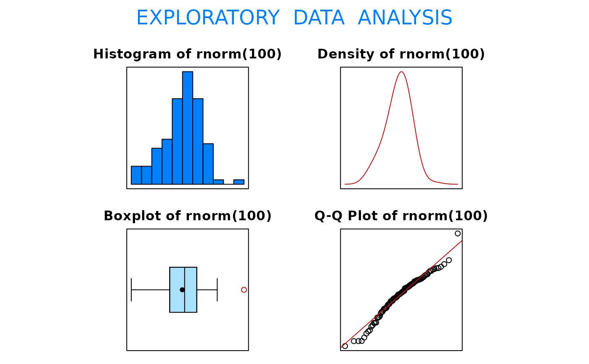

Function that produces a histogram, density plot, boxplot, and Q-Q plot.
EDA(x, trim = 0.05)numeric vector. NAs and Infs are allowed but will be
removed.
fraction (between 0 and 0.5, inclusive) of values to be trimmed
from each end of the ordered data. If trim = 0.5, the result is the
median.
Function returns various measures of center and location. The values returned for the Quartiles are based on the definitions provided in BSDA. The boxplot is based on the Quartiles returned in the commands window.
Will not return command window information on data sets containing more than 5000 observations. It will however still produce graphical output for data sets containing more than 5000 observations.
Requires package e1071.
EDA(rnorm(100))
#> [1] "rnorm(100)"

#> Size (n) Missing Minimum 1st Qu Mean Median TrMean 3rd Qu
#> 100.000 0.000 -2.363 -0.604 -0.027 0.079 -0.002 0.635
#> Max. Stdev. Var. SE Mean I.Q.R. Range Kurtosis Skewness
#> 2.796 0.932 0.869 0.093 1.239 5.159 0.254 -0.361
#> SW p-val
#> 0.030
# Produces four graphs for the 100 randomly
# generated standard normal variates.